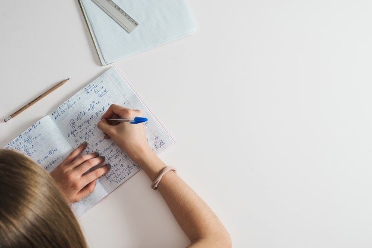

<ion-header>
  <ion-navbar color="primary">
    <ion-title>Home</ion-title>
    <ion-buttons start>
      <button ion-button (click)="singOut()">
        <ion-chip style="background: #ffff">
          <ion-avatar slot="end">
            
          </ion-avatar>
          <ion-label>User</ion-label>
        </ion-chip>
      </button>
    </ion-buttons>
  </ion-navbar>
</ion-header>

<ion-content class="card-background-page">

  <div class="row responsive-sm">
    <div class="col col-25">
      <button class="button-content" (click)="aSeleccionTematica()">
        <!-- Foto de escuela creado por freepik - www.freepik.es -->
        
        <div class="card-title">Temática</div>
        <div class="card-subtitle">Aprende diferentes de temas en relacion a la seguridad informática</div>
      </button>


      <button class="button-content" (click)=" menuEvaluaciones()">
        <!-- Foto de negocios creado por katemangostar - www.freepik.es -->
        
        <div class="card-title">Evaluación</div>
        <div class="card-subtitle">Evalua y mejora tus conocimientos sobre seguridad informática</div>
      </button>
    </div>
  </div>

  <div class="row responsive-sm">
    <div class="col">
      <button class="button-content" (click)="aEjerciciosCurso()">
        <!-- Foto de escuela creado por freepik - www.freepik.es -->
        
        <div class="card-title">Ejercicio</div>
        <div class="card-subtitle">Prueba tus conocimientos sobre segurida informática</div>
      </button>
      <button class="button-content" (click)="aVideosCurso()">
        <!-- Foto de fondo creado por rawpixel.com - www.freepik.es -->
        
        <div class="card-title">Video</div>
        <div class="card-subtitle">Contenido audio visual para complementar sus conocimientos</div>
      </button>
    </div>
  </div>

  <ion-fab left bottom>
    <button ion-fab color="secundary">
      <ion-icon name="arrow-dropright"></ion-icon>
    </button>
    <ion-fab-list side="right">
      <button ion-fab color="#ffffff" (click)="aManual()">
        <ion-icon name="md-help"></ion-icon>
      </button>
      <button ion-fab color="#ffffff" (click)="aEstadisticas()">
        <ion-icon name="md-stats"></ion-icon>
      </button>
      <button ion-fab color="#ffffff" (click)="aChatInteractivo()">
        <ion-icon name="chatboxes"></ion-icon>
      </button>
    </ion-fab-list>
  </ion-fab>

</ion-content>